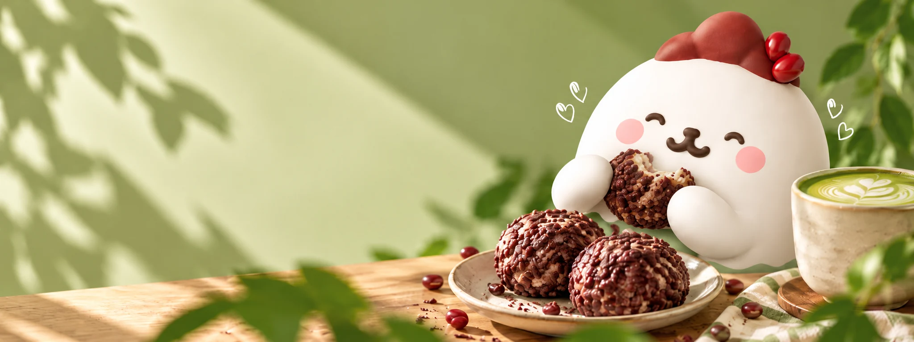
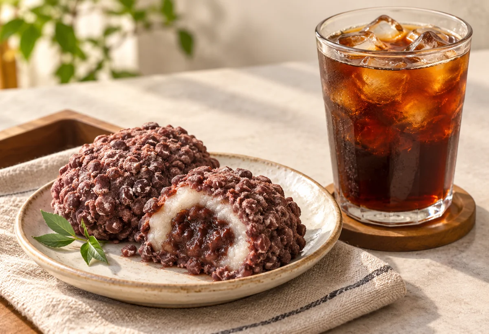
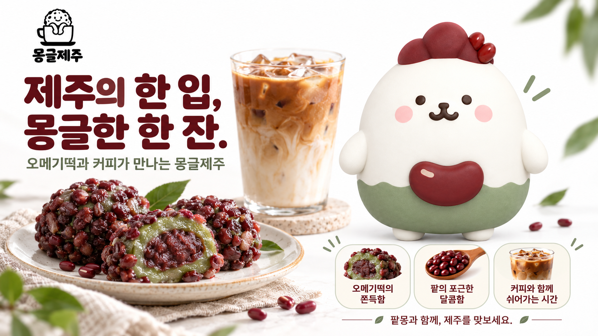

익숙한 떡에,
새로운 카페의 시간을.
몽글제주는 오메기떡을 중심으로 펼쳐지는 제주 디저트 카페입니다.
팥의 포근한 달콤함과 떡의 쫀득한 식감에 커피 한 잔을 더했습니다. 여행 중 잠깐의 휴식도, 평범한 오후의 간식도 제주를 떠올리는 시간이 되도록.
제주의 맛을 더 가까이, 더 편안하게.
몽글제주는 오메기떡을 중심으로 펼쳐지는 제주 디저트 카페입니다.
팥의 포근한 달콤함과 떡의 쫀득한 식감에 커피 한 잔을 더했습니다. 여행 중 잠깐의 휴식도, 평범한 오후의 간식도 제주를 떠올리는 시간이 되도록.
제주의 맛을 더 가까이, 더 편안하게.
팥의 달콤함에 깔끔한 커피 한 모금. 처음 만나는 몽글제주에 어울리는 조합이에요.

팥고물과 떡의 식감을
천천히 즐겨보세요.
달콤한 한 입 뒤에
향긋한 커피를 더해보세요.
팥몽과 함께하는 시간이
작은 제주 기억으로 남도록.
몽글제주에서는 쫀득한 떡을 바탕으로 팥의 달콤함, 흑임자의 고소함, 감귤의 산뜻한 풍미를 담은 세 가지 메뉴를 소개해요. 메뉴의 ‘자세히 보기’에서 맛과 추천 음료를 확인할 수 있어요.
팥 오메기떡에는 아이스아메리카노, 흑임자 오메기떡에는 말차 라떼, 감귤 오메기떡에는 카페라떼를 추천해요. 취향에 맞는 조합 고르기에서 비교해 보세요.
현재는 메뉴를 소개하는 페이지예요. 판매 가격과 주문 서비스는 아직 안내 전이며, 이 페이지에서 결제나 예약은 진행되지 않아요.
메뉴별 전체 원재료와 알레르기 정보는 아직 확정 안내 전이에요. 메뉴 이름이나 사진만으로 특정 재료의 포함 여부를 판단하지 말고, 판매 안내가 준비되면 상세 표시를 확인해 주세요.